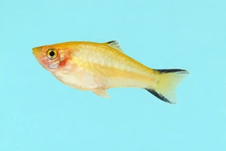
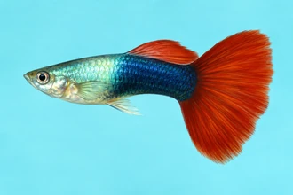
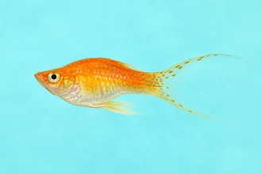
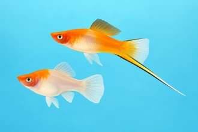
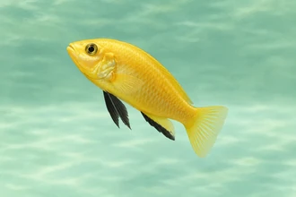

Freshwater fishes
A wide range of ornamental freshwater fish, with particular emphasis on platy, swordtail, mollies, barb, guppy, tetra and angel.
Photo galleries
-

AI illustration PlatyXiphophorus maculatus -

AI illustration GuppyPoecilia reticulata -

AI illustration MollyPoecilia latipinna -

AI illustration SwordtailXiphophorus heleri -

AI illustration Cichild
Source: Original page (opens in a new tab) ↗.
Also listed by the company
These freshwater categories are named on the original site but have no photo gallery there. Use Add to include a category in an enquiry. The list is reproduced exactly as published (including the duplicate “Snail”/“Snails” and “other”).
- Tetra
- Barb
- Danio
- Gourami
- Angel
- Catfish
- Glass Fish
- Shark
- Eel
- Goldfish
- Koi
- Fighting Fish
- Shrimps
- Snails
- Knife Fish
- Scat Fish
- Snail
- Puffer Fish
- other